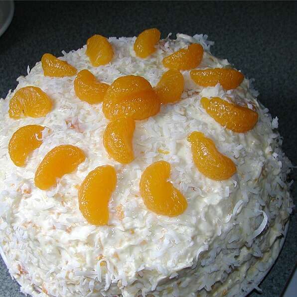

Million Dollar Cake Recipe

Description
A cake made from yellow cake mix is frosted with a cream
cheese, mandarin orange, and pineapple mixture for a
light and refreshing cake.
Ingredients
- 1 (18.25 ounce) package yellow cake mix
- 8 ounces cream cheese
- 1 ½ cups confectioners' sugar
- 1 (20 ounce) can crushed pineapple with juice
- 2 (8 ounce) cans mandarin oranges, drained
- 1 (3.5 ounce) package instant vanilla pudding mix
- 1 (8 ounce) container frozen whipped topping, thawed
Directions
- Mix and bake cake mix as per package instruction for
two 8 or 9 inch round layers. Let layers cool, and then
split each layer in half so as to have 4 layers.
- In a large bowl, whip cream cheese until soft, and then
gradually mix in confectioners' sugar. Stir in the pineapple
with juice and the drained mandarin oranges, reserving about
5 mandarin orange slices to decorate the top of cake. Mix in
the dry pudding mix. Fold in the whipped topping.
- Place one cake layer on a cake plate cut side up; spread with
frosting. Place another layer cut side down on the first one,
and top with more frosting. Repeat until all layers are used,
spreading last bit of frosting on top and sides of cake. Decorate
with reserved mandarin orange slices.
- Refrigerate overnight before serving.